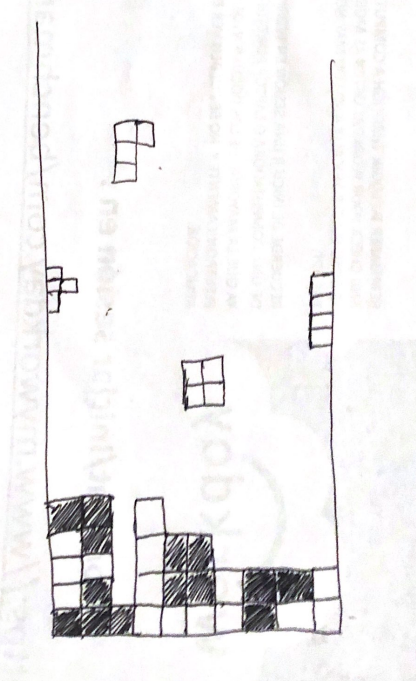
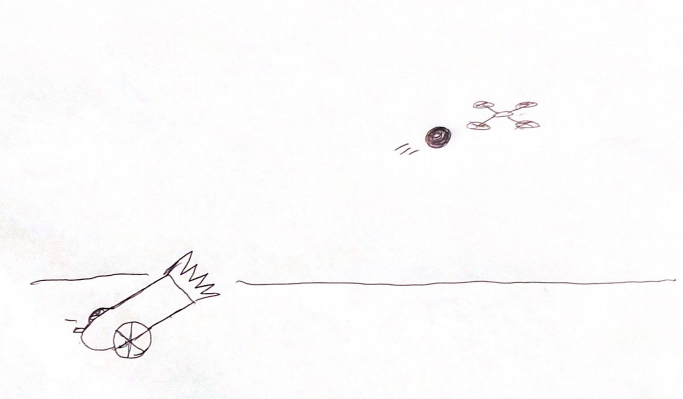

The Application of Brain-Computer Interfaces for Medicine and Communication
Present Technology
Currently, scientists are able to play simple games such as tetris and send yes or no signals as information between two brains (Jiang et al., 2019). The signals are transmitted using Transcranial Magnetic Stimulation, which causes an action potential using a magnetic field (Hallett, 2000). The signals on the receiver brain can interpret the signals as phosphenes, or hallucinations of light, to determine what to in the game (Jiang et al., 2019).

In addition, researchers at Duke University have been able to make rats communicate wirelessly in isolated locations in order to perform simple tasks such as pulling a the right lever to get water as a reward (Pais-Vieira et al., 2013). The information of what one rat learned would be based on trial and error would be transmitted to a second rat, which could use the given information to make the correct decision (Pais-Vieira et al., 2013). According to Pais-Vieira et al. (2013), the rat receiving the information had around a “78.877%” success rate in making the correct response based on information that came from the first rat and had better performance than if the rats were doing the activity independently.
Andrea Stocco and Rajesh Rao were able to create a human brain-to-brain interface where Rao successfully transferred a brain pulse to Stocco (Armstrong & Ma, 2013).
Dr. Rao, one of the scientists working on the project, put on electrodes going from his cap to an “electroencephalography machine” (EEG) which monitors brain activity while his co-worker was on the other side of the campus with a cap fixed over “his left motor cortex,” which is responsible for "hand movement" (Armstrong & Ma, 2013). He used his mind to control his co-worker’s hand as they played a simple video game together that involved shooting a “cannon at a target” (Armstrong & Ma, 2013).
